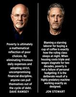

The Free Software Foundation "has never supported Raspberry Pi," writes their deputy directory Sean O'Brien, "as it depends on nonfree software for the boot process, leaving an important part of the computer outside the user's control."
But they're now decrying "an even more intrusive restriction on user freedom" — the binary-blob bootloader changes that limit your ability to upgrade RAM:
The restriction is not new: the relevant checks were introduced in the device firmware around 2024. However, these hardware handcuffs have only recently received wider attention. Though a user can desolder the original memory and install electrically compatible RAM, the nonfree firmware may refuse to recognize the additional memory, or simply decide not to boot the computer at all. Even replacement RAM of the same capacity can be rejected.
This is worse than Raspberry Pi's longstanding dependence on nonfree firmware in an important way. It is not only nonfree software, but it is Digital Restrictions Management (DRM), used in this case to prevent the owner of the computer from making a modification that the hardware is otherwise capable of supporting. That distinction matters. Soldered RAM is difficult for most people to replace since it is a physical characteristic of the hardware. In the case of Raspberry Pi boards, users have demonstrated that the hardware itself can be modified successfully....
Raspberry Pi justifies the use of DRM on the basis of being able to identify altered computers. There may be legitimate reasons for wanting to identify such altered computers. Unscrupulous sellers have reportedly replaced memory on lower-capacity boards and resold them as more expensive models, sometimes using unreliable or defective components. But preventing fraud and maintaining quality does not require taking control away from users. A Raspberry Pi could record its original factory configuration in a cryptographically verifiable form. Raspberry Pi could use free software that warns the user when the installed RAM differs from original factory configuration. Raspberry Pi could provide tools allowing buyers to verify what hardware originally shipped with a board. None of those measures requires a software-enforced limit on what an owner may do with the computer...
If compatible hardware can be installed successfully, the manufacturer should not create restrictions to prevent the owner from using it. Restrictions on hardware upgrades are deeply troubling from an organization like Raspberry Pi that has stated their commitment to longevity as a guiding principle. Free software is ultimately about who controls the computer. The user should control it, not the manufacturer that sold it....
The people who own these computers must also have the freedom to modify, repair, and upgrade them, without restrictions imposed by nonfree software limiting their potential.
Hackaday recently argued the restriction was "no big deal." noting there's ways to bypass the restriction"
The bootloader is stored in the SPI flash chip, which can be reflashed using the built-in mask ROM over USB and rpiboot, and you are not prevented from flashing older versions of the bootloader, so far... If you have the skills to upgrade your RAM, you most certainly have the skills to downgrade the Raspberry Pi bootloader...
My advice: don't lament Raspberry Pi RAM upgrades, especially given they're only slightly harder to perform now. Very few hackers ever performed them, the main audience for them turned out to be dodgy hardware resellers online... Think of the users that will no longer be fooled by a shady seller on Amazon, especially now that the perverse incentives for board mods and reusing harvested RAM chips are at their highest.
Read more of this story at Slashdot.
For more than a year, The New York Times followed recipients of a universal basic income program who received $1,330 a month for an entire year.
There were benefits, but also the everyday challenges of being poor, and turning their life around "did not turn out to be quite that simple."
Across Silicon Valley, experimental guaranteed income programs have quietly taken off. Google began funding six different initiatives in 2022 as part of a $50 million donation to nonprofits in the San Francisco Bay Area, saying basic income could be a novel way to prevent homelessness in one of the nation's most expensive locations. Each program has hundreds of participants who receive around $1,000 a month, and academics study the results. State and federal tax laws limit the lengths of the programs and the payment amounts.
The studies have found that most basic income programs improve short-term employment and mental health while reducing food insecurity. But while data from these efforts has been closely tracked, less is known about the individual journeys of participants... The Times ultimately shadowed three people... All of the program participants, including the ones The Times followed, were previously homeless and transitioning off a housing stipend that paid for a portion of their rent, and many received the payments on top of other social assistance like food stamps.
The Times's findings mirrored the academic studies. For all three recipients, the instant benefits of basic income were clear: They had breathing room for groceries, rent and other expenses. But the success of the payments in another area — giving people more free time and opportunity in the long term — was mixed. "It's a lot to ask of someone to get their life together in 12 months, when a lot of these issues are structural or systemic," said Jennifer Loving, who runs Destination: Home, a nonprofit that administers basic income programs in Silicon Valley. "And the world around them isn't getting cheaper."
One recipient began going to community college — but resorted to taking one class at a time while single parenting — and using their monthly payments to help support relatives. In fact, the article notes that a recent study of 3,000 universal basic income participants found that money spent supporting friends and family increased 26%, "the most of any category. That was more than the increases for food (6%) and child care (11%)."
Another recipient used the time to get help at a community college to find a higher-paying job. And one recipient died — but his mother used what he'd saved to help put his brother through a drug rehab program.
Read more of this story at Slashdot.
"When state lawmakers attempt to rewrite how the internet works," argues an EFF blog post, "users rely on courts to recognize that laws can't make technical impossibilities a reality."
"That's why we were happy to see that a court has blocked Utah's attempt to outlaw the privacy protections of Virtual Private Networks (VPNs)."
In a win for digital rights, a federal judge has issued a preliminary injunction blocking Utah's SB 73, the state's draconian anti-VPN age verification law... Signed into law earlier this year, SB 73 attempted to regulate adult websites by requiring them to block VPN users or to identify the physical location of visitors using them or similar tools that mask their network traffic. It even went so far as to prohibit websites from offering instructions on how to use a VPN to bypass these checks. This made Utah, to EFF's knowledge, the first state in the nation to target the use of VPNs to avoid legally mandated age-verification gates. The Utah federal court halted enforcement of the law's VPN provisions last week, ruling that the law likely violates the U.S. Constitution's prohibition on passing laws that significantly burden businesses and people outside Utah's borders.
SB 73 burdens the rights of all internet users outside of Utah because it requires adult websites to either know every visiting user's physical location, and then block those in Utah, or to verify every visitor's age just in case they might be in Utah. The law's "actual-location provision in practice requires an entity to perform age verification services for every user visiting its site from any location because the entity would violate the law if even one of those users happened to be obfuscating," the court wrote. The court essentially ruled that Utah has less-burdensome ways to prevent Utah minors from accessing adult websites than requiring all users in the world to comply with SB 73.
EFF's position is that "forcing platforms to detect and block privacy-preserving tools undermines user privacy and security worldwide while demanding the impossible."
But there's another problem, explained an EFF email this week. "Age verification laws that are predicated on users possessing identity documents exclude critical sections of populations. And this problem is global in nature: Millions of people lack government-issued identification or encounter regular challenges to obtaining or updating it...."
Every site-blocking bill has the same rotten idea at their core: That enforcing copyrights requires building a censorship machine for websites into the architecture of the internet. This is, of course, a disaster for a free and open web. These proposals keep coming, but there is still no way to create a mechanism for blocking access to an entire website that does not invite both deliberate abuse and lots of collateral harm to free and lawful speech.
EFF has declared this month "Opt Out October," and each day they're offering new guides on how to "stand our ground and take control over what happens with our data."
Read more of this story at Slashdot.
Linux maintainers "have ruled that people no longer have to declare their LLM usage," reports XDA Developers, "as Torvalds himself calls a ban on AI 'utterly stupid.'"
The first part of this story comes via a message sent to the Linux mailing list. It announces one of the major changes decided during the Maintainers Summit on October 8, 2026, in Prague, Czechia, where submissions to the kernel no longer need to use the "Assisted-by" tag... meaning that people can submit AI-generated code without needing to declare it as such.
In some correspondence regarding concern about this new disclosure removal, the creator of Linux, Linus Torvalds, made his thoughts known... [Torvalds] compares an AI ban to getting rid of text editors, as doing so would prove that someone could write a good commit message without making any mistakes. He then rounds off his argument by asking, "Do you not see how UTTERLY STUPID those kinds of rules would be?" and stating that he simply expects the people working on the Linux kernel to "understand what they are doing."
Here's the last line of Torvalds' post. "Quite honestly, in my experience, the people I respect and call intelligent are not the ones that shy away from using new and interesting tools."
In a related story, Torvalds says he's used AI to help him understand patches that were hard to follow. And this week Torvalds even posted an LLM-assisted patch, reports Tom's Hardware:
The development branch purports to fix an old issue with massive cache contention when many CPUs are reading the same file — a scenario potentially encountered when using shared libraries, databases, and web servers. Several developers had already made attempts over the years at fixing the issue, all with varied results, none quite ideal as an all-encompassing solution... He's now posted his solution in a development branch, and claims that he's seen a 23x performance improvement in a dedicated synthetic benchmark, though he notes that actual real-world impact will be far less significant, as "no real load" will witness those figures.
Torvalds used Anthropic's Claude Code, reports The New Stack, and "said the assistant wrote the implementation, tests, and initial documentation, and reviewed the code under his direction. He ran the benchmarks himself, despite having previously criticized developers for claiming AI writes 99% of their code." Tuesday Torvalds submitted a 10-patch series.
"Reviewers have since identified a race condition and raised concerns about memory reclamation," adds The New Stack. "Torvalds has handed further development to Kiryl Shutsemau, a Linux kernel developer who previously worked on the same bottleneck."
Read more of this story at Slashdot.
Gizmodo reports:
Roughly 84.4% of the world's coral reefs suffered bleaching-levels of heat stress during the last major marine heat wave from January 2023 to September 2025, with over half already lost compared to coral coverage in the 1950s... But there's some good news, thanks to a new study published this Wednesday in the journal Science Advances: Marine ecologists at Stanford have discovered that bleached corals can be revived via contact with a healthy coral neighbor, who (like a good neighbor) shares their photosynthetic, symbiotic algae (Symbiodiniaceae) with their peers.
"This incredible new result — that fast and full recovery is possible in bleached coral — can inspire solutions that eventually may be scalable," [Fiorenza Micheli, a marine ecologist with Stanford's Center for Ocean Solutions and study co-author, told the journal Nature]... Unlike their controls, bleached coral in contact with healthy coral recovered in just eight weeks... [T]he surprise discovery of this method alongside the other techniques that marine conservationists are now actively pursuing — including the successful deep-freezing and revival of at-risk coral sampled from Hawaii — could offer threatened reefs the lifeline they need. Coral contact could super-charge other efforts, like the selective breeding of heat-tolerant corals and the cultivation of protected coral nurseries
Read more of this story at Slashdot.
The Verge reports:
OpenAI, Meta, Google, Instinct, and others promise their agents can scour the internet on your behalf, doing anything from booking a dinner reservation and cleaning out your inbox to buying new shoes. But what happens when the rest of the internet won't play nice?
In recent weeks, users of services like Meta's Muse, xAI's Grok, OpenAI's Dots, and Instinct have reported blocks preventing their AI agents from performing tasks across top websites. Yelp told TechCrunch that it only allows AI agents that pay for its data licensing program, while Delta Air Lines is preventing them from booking tickets on behalf of users. JPMorgan Chase and Charles Schwab have also confirmed that they're blocking AI agents from accessing accounts due to security concerns. Some users say sites that previously worked with their AI agent are no longer accessible, including Cars.com and Amtrak, suggesting other companies could be quietly blocking them....
Muse, Meta's deceptively cute AI assistant, most recently faced the wrath of Amazon, which said its "continued access" violates its site policies. There are reports of xAI's Grok, Instinct's AI agent, and OpenAI's Dots being unable to use Amazon as well. xAI owner Elon Musk responded by saying that maybe he "should start a competitor to Amazon." The more places bots struggle to access, the greater the questions about how useful they are....
Instead of trying to fight Amazon, [Meta] has partnered with retailers like Walmart, Gap, Sephora, Best Buy, and others, allowing Muse to shop on their sites. At the same time, Shopify has also opened its network of storefronts to AI agents.
Read more of this story at Slashdot.
More details are emerging about Saudi OpenAI employee Abdulrahman Alfozan, who was arrested by the FBI for allegedly planting a recording device in an executive conference room. Previously Alfozan "was an engineer at Meta," notes the New York Times, "before joining a start-up that went through Y Combinator, the Silicon Valley start-up accelerator. He gained permanent residency status in the United States in 2020, according to court documents, and was hired by OpenAI in July 2025."
14 months later the conference room recording device was inserted in a USB port on the back of a television, and then concealed in toilet paper, according to a statement from America's Justice Department. (There's even a photo of a device — and a photo of Alfozan entering the executive conference room and appearing to look behind the television where the device was inserted.) The FBI's says a chatbot account associated with Alfozan's spouse showed prompts asking about installing and obfuscating a recording device. And the complaint alleges that OpenAI security personnel also found a bag Alfozan left in a different room which contained his wallet, his ID, and another recording device.
Discussions in that room included "highly confidential technical, commercial, and strategic information, including proprietary research," according to the FBI, "as well as nonpublic information about Open AI's technical progress and strategic decisions..."
"If convicted, Alfozan faces a maximum penalty of 5 years in prison and a $250,000 fine, followed by 3 years of supervised release."
Friday Alfozan's lawyersrequested his release from custody, saying Alfozan agrees to wear an ankle monitor, remain at home, surrender his passport and "not possess any covert audio or video recording or surveillance device." They argue that the one-way ticket he'd purchased to Saudi Arabia just continues a long-standing habit of buying one-way tickets over the years for air travel, since his tech career often involves last-minute changes to meeting schedules, and "70% of the airline bookings in his email since January 2021 (96 of 138) were one-way tickets."
His lawyers also presented 46 letters of support, including letters from former Meta colleagues, ten company founders and chief executives, and more than a dozen engineers and engineering managers.
Read more of this story at Slashdot.
"Even LinkedIn is getting tired of your AI-written posts," writes CNN, reporting that the Microsoft-owned, job-oriented social media site "is upping its fight against slop."
A report published in July by Pangram, a research firm that tracks AI content online, found that more than 40% of long-form posts on the platform were AI-generated, compared to around 30% on X and Medium and a smaller percentage on Reddit and Substack.... LinkedIn previously offered AI tools to edit or rewrite posts, although it recently scaled the offerings back. But low-quality AI posts are a business problem for LinkedIn. They all start to sound the same, [according to LinkedIn Editor-in-Chief Dan Roth Roth]. If users see too many generic AI posts, instead of content that really teaches them something or gives them a deeper understanding of a professional connection, LinkedIn risks losing them to other platforms.
In August, LinkedIn rolled out a button letting users flag when a post "seems like AI slop," which was clicked more than 1 million times within its first two weeks. Now, the company is trying to use its own AI systems to help weed out AI slop on the platform and to remind LinkedIn users how to post like humans. The company built a team largely made up of former journalists and social media experts who have an eye for recognizing generic, sloppy content. These experts help train LinkedIn's AI model on what authentic, useful posts look like. If the model flags a post as low-quality, AI-generated content, it'll be less likely to be distributed beyond that user's direct connections.
Also key to the strategy is a creator management team that acts as "content therapists" for executives, subject matter experts and other LinkedIn users, many of whom have gotten accustomed to the convenience of using AI to write what, on the surface, appear to be polished posts, Roth said. "A lot of times now today, they'll run it through Claude or Gemini or wherever, they'll post it on LinkedIn and it will perform poorly. And then they come to the team and they're like, 'Why did this do badly?'" Roth said. "And the best thing you can do is give it back to them and be like, 'Did you enjoy reading this? Do you see yourself in this?"
The efforts are showing early signs of success. Improvements to LinkedIn's detection systems have resulted in a 40% decline in views of content classified as AI slop, the platform said last month. That's not to say LinkedIn is entirely opposed to AI, Roth said, adding that "not everyone is a born communicator." But failing to edit or personalize content means it's less likely to reach a wide audience on the platform.
Read more of this story at Slashdot.
TechRepublic reports:
The TIOBE Index is a monthly indicator of programming-language popularity based on factors including skilled engineers, courses, and third-party vendors. The October 2026 rankings show a largely stable top 10, with R overtaking SQL and Julia returning to the top 20 for the first time in three years. [SQL has risen to #9 from #10 in October of 2025 — back when R ranked only #13.]
Python remains No. 1, followed by C, C++, Java, C#, and JavaScript, while Rust holds its No. 10 position. [A year ago Rust ranked only #16.] Outside the top 10, Julia climbs from No. 21 to No. 18, and TIOBE introduces Mandarin Chinese search terms into its methodology to broaden the index's geographic representation.
Dropping out of the top ten is Go, which fell from #8 in October of 2025 to #11. And Delphi/Object Pascal has plummeted from #9 to #19.
TIOBE CEO Paul Jansen argues that Julia's growing popularity "is largely driven by the demand for modern programming languages that combine high performance with ease of learning, particularly for numerical computing."
Python offers an accessible, high-level approach to numerical computing, but performance can become a bottleneck. C++, on the other hand, delivers excellent performance but comes with a steeper learning curve and a lower level of abstraction. Julia aims to bridge this gap by combining the best of both worlds...
Apart from Julia, two other languages are knocking on the door of the TIOBE top 20: Dart and OCaml. Dart jumps from #41 to #27 this month. Thanks to its popular UI toolkit Flutter, Dart has been hovering around the edge of the top 20 for quite some time. OCaml, on the other hand, might come as a surprise. It jumps from #38 to #26 this month, driven in part by its growing use in real-time trading systems and parsing technology.
Read more of this story at Slashdot.
Long-time Slashdot reader ardiri remembers his days writing applications for the Palm OS. And he's now released approximately 1.5 GB of historical Palm OS development resources, "accumulated during the early days of handheld computing and preserved on hard drive backups for more than 25 years... to preserve the tools and knowledge that helped define an important era of personal computing."
The collection includes historical SDKs, developer conference presentations, technical documentation, programming examples, limited source code, and development utilities. (ROM images, commercial applications, and simulator binaries have deliberately been excluded....) Making a broader collection of development resources available to the retrocomputing community, the archive is available at GitHub.com/ardiri/dev-palmos and is intended for historical preservation, education, and research, particularly as enthusiasts continue working to maintain, emulate, and revive the platform... Ardiri has also written an auto-biography and has started explored the engineering principles behind these systems in his books.
And somewhere along the way, Ardiri rediscovered the original source code for "The Palm OS Virus That Never Was — Lost for 25 Years, Found in 2026." Lurking on a CompactFlash card containing files dated June 2001, he found the self-replicating Palm OS virus that he'd developed and tested in June 2001, months before the planned PalmSource developer conference in San Jose.
Named 'Virii,' the virus intercepted Palm OS system calls to progressively infect legitimate applications while preserving their original functionality. Infected applications could then spread between handheld devices through infrared beaming, potentially allowing an infection to propagate among hundreds of developers exchanging software at the conference. The virus also included a date-triggered payload designed to interfere with system time reporting between October 23 and 27, 2001, potentially causing erratic clocks, unreliable alarms, and missed appointments.
He promises the functional source code and binaries will remain private.
Read more of this story at Slashdot.
BoingBoing reports:
Mark Stephens, better known under the pen name Robert X. Cringely, died last week at 73. Stephens chronicled the tech industry of the late 1980s and early 1990s — the age of Bill Gates' rise, Steve Jobs' repose, the dawn of the world wide web — and produced the famed documetary Triumph of the Nerds, based on his own bestselling Accidental Empires: How the Boys of Silicon Valley Make Their Millions, Battle Foreign Competition, and Still Can't Get a Date.
Though not the first InfoWorld columnist to write under the Cringely name, he was responsible for its persona and fought successfully to keep it after he left the magazine in 1995.
"I loved the man," writes Darth Technoid (Slashdot reader #83,199):
I first met him in the 1990s, while he was still working at InfoWorld, and we became friends immediately. He helped me get a job or two, and he was always filled with crazy (meaning really good) ideas.
I'll miss him and his creativity greatly.
Cringely answered questions from Slashdot's readers in 2000. And Cringely led an interesting life, as you can tell from Slashdot's January, 2020 story Robert Cringely Attempts an Air-Launching Space Startup:
"How does a 67-year-old hack with three minor children recover from going blind, losing his home and business in a horrible fire (like 2,000 others, we are still fighting with insurance companies), while appeasing an angry crowd of Kickstarter supporters armed with pitchforks and shovels?"
That crowd still wants long-time tech pundit Robert X. Cringely to deliver on his Kickstarter-funded project to create custom Minecraft servers. So in a new blog post this week, Cringely writes that "I went looking for venture money to recapitalize MineServer and I simultaneously started a satellite launch company to fund my eventual retirement. I am not making this up..."
He's now found a Beverly Hills patron who wants to be a co-investor in the Minecraft servers, but "I will have to earn the matching money on my own, which is what I have been trying to do with my other startup, Eldorado Space."
Slashdot has often linked to Cringely's commentary over the years, as far back as 1998 and as recently as this summer. ("Tech Pundit Cringely Co-Founds Startup '2Brains Inc' to Solve LLM Hallucinations.")
July, 1999: Cringely's take on "Pirates of Silicon Valley" April, 2009: Three Mile Island Memories June, 2011: IBM Did Not Invent the Personal ComputerMarch, 2019: Cringely's Final Predictions: Apple Becomes a Financial Service and Hedge Fund June, 2019: Cringely Predicts The End Of Broadcast TV Within A Decade April, 2020: Not Just 'The Death of IT'. Cringely Also Predicts Layoffs For Many IT Contractors January, 2021: Robert Cringley Predicted 'The Death of IT' in 2020. Was He Right? June, 2023: Cringely Predicts Moore's Law Will Continue — Because of AI
But my favorite Cringely memory is Steve Jobs: The Lost Interview, the full 70-minute interview from 1995 that a 40-year-old Jobs gave to Cringely during filming for Triumph of the Nerds. ("And they actually sent someone to wake up the Pope....") There's various pirated copies on YouTube and an online transcript, but only 10 minutes made the broadcast — at the time Jobs was still at NeXT after his departure from Apple. But when Cringely rediscovered the videotape, the entirety of the interview was released to theaters in 2012 six months after Steve Jobs' death.
Share your own memories of Robert Cringely in the comments...
Read more of this story at Slashdot.
That Saudi national working at OpenAI and arrested by the FBI "has not been charged with foreign espionage," writes the Washington Post, "and the U.S. government has not said whether he was acting alone or as an agent of a foreign government."
But "there are signs that the U.S. government is exploring the latter possibility," they add, citing comments from Chris McGuire, a member of the National Security Council during the Biden administration:
The Department of Justice's press release about the incident says that the National Security Division's Counterintelligence and Export Control section, whose responsibility includes prosecuting spies, is assisting with the case... A Washington-based Middle East expert, who spoke on the condition of anonymity to avoid incurring wrath from Saudi Arabia, said he believed the Saudi government was almost certainly involved in some way. "No one does this, not even for patriotism, without getting paid," said the person. And money would not be distributed without agreement by the Saudi royal court, he said. The Saudis lag behind their regional rival, the United Arab Emirates, in artificial intelligence development, he added.
Friday America's Director of National Intelligence told CNBC that espionage, "both commercial espionage, and I would say state-sponsored espionage, are realities. It's something that our private sector companies need to be wary of." (And CNBC adds that"An ex-CIA official, who asked not to be named because they were discussing information that is not public, told CNBC this week that the case is 'probably the tip of the iceberg.'")
The suspect had recently said he helped advise government agencies in Saudi Arabia on technology, reports the New York Times:
In an Arabic podcast interview last month, Abdulrahman Alfozan, 35, a Saudi national, said he and other Saudi tech professionals in Silicon Valley had formed a group that advised Saudi organizations, including the kingdom's social insurance agency...
"Silicon Valley is ground zero for espionage from a variety of countries around the world," said Amy Zegart, a professor at Stanford University who specializes in national security and intelligence. She added that she was "troubled" by the OpenAI incident and expected more cases "because these companies are so important."
The Washington Post says the arrest "has ignited a fierce debate about the potential risks of Silicon Valley's international workforce — employees who often hail from nations seeking to rival the AI superpower status of the U.S."
Foreign nationals have long formed the backbone of the American tech industry, helping U.S. companies surpass their would-be international rivals... As recently as April, Katrina Mulligan, a senior member of OpenAI's national security team, called for an "accelerated pathway to citizenship" for such workers, referring to foreign hires as a "national strategic asset" at an event on Capitol Hill. She estimated that a significant number of OpenAI's employees were not U.S. citizens, including Chinese nationals. Just half of the 300 top AI researchers in the world, she said, were American.
Other industry leaders — as well as some lawmakers — have long accused top-tier tech companies with many foreign workers of disadvantaging Americans and being breeding grounds for Chinese espionage. Palmer Luckey, CEO of weapons maker Anduril, and venture capitalist Shaun Maguire of Sequoia Capital took to X on Wednesday to revisit arguments that the industry should focus on hiring U.S. citizens. "Silicon Valley has operated with maximum openness and maximum naivete toward foreign tradecraft," Maguire wrote... At OpenAI on Wednesday, employees continued tense conversations about the political implications of the arrest for immigrant workers, two OpenAI employees said, speaking on the condition of anonymity to describe internal discussions... The arrest triggered a discussion on OpenAI's internal Slack messaging platform among employees about whether the incident might increase pressure from the Trump administration on OpenAI to not hire foreign nationals, said one of the people.
In March, Emil Michael, the Pentagon's chief technology officer, wrote in court papers that AI developer Anthropic's reliance on staff with ties to China was among the concerns that fueled the Defense Department's conflict with the AI company.
Read more of this story at Slashdot.
A Philadelphia newscast reports on a grey-haired lady who allegedly refused to move out of the path of a delivery robot as a form of protest because "I know they're taking the jobs of human delivery workers."
She was arrested, but says her actions were protected speech:
According to police, Marvin repeatedly blocked the robot's path and ignored multiple commands from officers to move... Marvin said she was protesting the use of delivery robots because she believes they are replacing human workers.... "I have been protesting them whenever I saw them by standing in front of them and preventing them from going forward," Marvin said...
Marvin said she has confronted delivery robots on multiple occasions... Ashley Baldwin of West Philadelphia said she witnessed one of those encounters. "I actually thought the robot hit her, so my original question was, 'Are you OK? Did the robot hit you?' And she said, 'No, I have to stop this. They're taking over the world,'" Baldwin said.
Asked whether she plans to continue protesting the robots, Marvin said she does.
She was charged with disorderly conduct.
Uber did not respond to their request for a comment.
Read more of this story at Slashdot.
MapQuest creates a new layer (that can be toggled on and off), Gizmodo reports:
After promising not to comply with the Trump administration's "Lake America" gimmick, the platform announced a new "Surveillance Layer" that displays the locations of automated license plate readers (ALPRs), including those from Flock Safety. Per MapQuest, its new tool will identify the locations of known outdoor surveillance cameras and plate readers from Motorola Solutions (Vigilant), Genetec, Axis Communications, Axon, Leonardo (ELSAG), Neology, Rekor, PlateSmart, Ubicquia, Verkada, and others.
While the company didn't specify how it sources its data, it appears to be similar to the data amassed by DeFlock, which maintains a user-submitted map of ALPR camera locations. MapQuest may be sourcing the information from DeFlock and the OpenStreetMap project.
Engadget notes that MapQuest also recently added "useful, long-overdue features like Android Auto support and public transit directions."
Read more of this story at Slashdot.
"Jeff Bezos' Blue Origin said Friday it plans to make extensive upgrades to its Florida launch facilities," reports CNBC, "with the goal of supporting multiple flights per week by the end of the decade."
"The company will add two more launch and landing pads for New Glenn, its heavy-lift, partially reusable rocket."
A $330 million expansion to its Rocket Park campus in Cape Canaveral, expected to be complete in the summer of 2027, will enable it to produce up to 150 upper stages of its New Glenn rocket annually, Blue Origin said in a blog post. "These investments are centered on one goal: building the capacity to support more missions, more reliably, and more efficiently," Ian Richardson, Blue Origin's senior vice president of operations, wrote in the post. "As we look ahead, this infrastructure is designed to support multiple flights per week by the end of the decade...."
Blue Origin said it's building a new customer integration facility with the U.S. Space Force at Cape Canaveral Space Force Station that will enable it to "prepare multiple missions at once" when it's up and running. Blue Origin has invested more than $3 billion in its infrastructure and facilities in Florida, which now spans more than 20 sites across the state's Brevard and Orange counties, with more than 5,000 employees, [Ian Richardson, Blue Origin's senior vice president of operations, wrote in the blog post].
The article notes it's part of "a flurry of investment" as SpaceX stops offering commercial rides on its Falcon 9, "with $92.5 billion invested in the commercial space sector in the first three quarters of 2026, according to a report this week by venture capital firm Space Capital." And it happens as Blue Origin, SpaceX and other rocket providers "are seeing increasing demand from companies and governments trying to deploy satellites into orbit."
"Launching at a high cadence requires a connected system," says Blue Origin's blog post, "one that manufactures vehicles at scale, prepares customer payloads efficiently, supports reliable launch operations, and quickly returns reusable boosters to service. We are building that system here in Florida," and "laying the foundation for a future where access to space is more frequent, more reliable, and more affordable, for the benefit of Earth."
Read more of this story at Slashdot.
Phoebe Liu / The Information : Sources: industry execs expect only 7-10 of hundreds of neoclouds to survive, as Nvidia supports them with easier credit terms, site finding, and $20B in leases — How many young AI cloud providers can the market, and Nvidia, support? — That's one of the big questions after a week …
Anthropic : Anthropic says it's committing 5% of its shares to a Public Benefit Fund, for a total of ~20% with co-founder and staff pledges, plus 2% per 50% valuation rise — Today, we're committing a portion of Anthropic's shares to the Anthropic Public Benefit Fund, a new entity with a structure that increases the stake as the company grows.
Kyu-Seok Shim / Reuters : Sources: Nvidia asked Samsung, SK Hynix, and Micron to make base dies for its custom NVHBM memory on TSMC's 3nm process; Samsung agreed, its first use of TSMC — Samsung Electronics (005930.KS) will use TSMC's (2330.TW) 3-nanometre process to produce base dies for Nvidia's (NVDA.O) …
Mark Gurman / Bloomberg : Sources: HomeView units sat in warehouses for months; Apple plans a Nov. 6 store reset, likely for new Macs; iPhone Duo preorder mess could boost 18 Pro sales — Also: The company is planning Nov. 6 retail store reset, indicating potential Mac release date.
Giovanni Colantonio / Polygon : An interview with Apple's new VP of the App Store, Carson Oliver, on Apple's gaming vision, Apple Arcade, providing tools for indie game developers, and more — Back when Apple Arcade launched in 2019, there was a resounding belief among gamers that the mobile gaming service wasn't long for this world.
Financial Times : RegLayer: 47+ large US data center projects were delayed, withdrawn, or blocked in 2026; Bernstein says ~35% of the planned US data center pipeline is credible — A vast bet on the future of the technology is running into the unforgiving economics of the physical world
New York Times : AI debt worries mount as CoreWeave's bond yield tops 15%, insuring SoftBank debt gets pricier, and some Oracle debt trades near 80 to 90 cents on the dollar — Debt trouble at CoreWeave, Oracle and SoftBank raises questions about whether there are broader problems with the data center build-out.
James Titcomb / Telegraph : Microsoft cancels its deal to be the anchor tenant and rent 23K Nvidia AI chips at Nscale's Essex, UK, data center, which may not get grid power until the 2030s — US tech giant pulls the plug on Nscale deal in threat to multibillion-dollar listing — Microsoft has pulled …
Nick Lichtenberg / Fortune : Holyvolt, which develops AI tools for making and testing new battery materials, raised $45M from Zone II, CC.VC, and others, a source says at a $245M valuation — Steven Prast is old enough to remember when a mobile phone came in a bag. It was too heavy to carry around, so most people mounted it in the car.
Cristina Criddle / Financial Times : Sources: Anthropic is consulting law firms on deal negotiation tactics as it develops AI agents to negotiate on humans' behalf and interact with AI counterparts — Tech companies are being forced to confront the rules of negotiation when machines act on humans' behalf
Bloomberg : GTCR and Elliott agree to acquire and take private CCC, a Nasdaq-listed car insurance software provider, for $4.6B; the deal values CCC at $6.1B including debt — GTCR and Elliott Investment Management are acquiring car-insurance software provider CCC Intelligent Solutions Holdings Inc …
Bloomberg : Filing: Disney agreed to hire 60+ staff from Character.AI and pay them ~$180M over three years, plus $30M for retention awards; a bankruptcy judge must approve — More than 60 workers at Character.AI are being offered a lifeline from the media giant … Soft Landing — Layoffs are common in bankruptcy.
Joanna Stern / The New Things : An interview with Microsoft CEO Satya Nadella on the Nvidia RTX Spark-powered Surface Laptop Ultra, plans to make Windows a safer OS to run AI agents, and more — My exclusive interview with Satya Nadella on the new Surface Laptop Ultra and Microsoft's plan to make Windows safer for AI agents
Google : Google says “magic state cultivation” works in practice on its Willow quantum processor, calling it a breakthrough that reduces errors by about 40x — We've shown that magic state cultivation works on Google Quantum AI hardware. — Google Quantum AI has demonstratively opened …
Walter Schulze / Startup Fortune : Anomaly Innovations, behind coding agent OpenCode, says a breach hit ~1.4% of OpenCode Console users and their API keys, in a “large scale distillation attack” — A large-scale distillation attack against the company behind the open-source coding agent OpenCode exposed stored OpenAI …